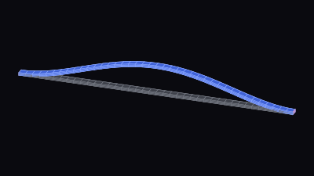
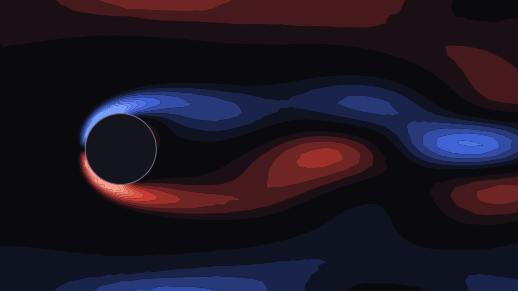
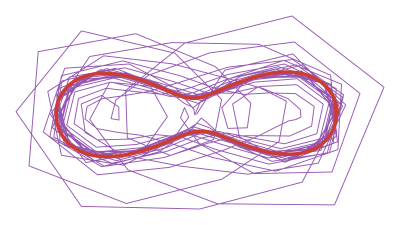

Tutorials
Structures

Get started
From a mesh to a ROM
Compute the backbone curve of the first bending mode of a clamped beam with geometric nonlinearity.
Navier–Stokes

Intro · Full example
Kármán vortex street
Reduce the Navier–Stokes equations to understand how increasing the Reynolds number creates vortex shedding past a cylinder.
NthOrderModel

Mid · Core Library
Building a full-order model
MORFE's full-order models have 3 components: the matrices of the linear terms, the nonlinear terms, and (optionally) a external system.
MultiindexSet
Mid · Core Library
Monomials and multiindices
Which monomials does the solve compute? Build the set yourself — generators, anisotropic truncation, deletion, and a spectral bound on the superharmonics — with an interactive lattice at every step.
Reproducibility
Every tutorial ships with everything needed to run it: the mesh and the MORFE code.